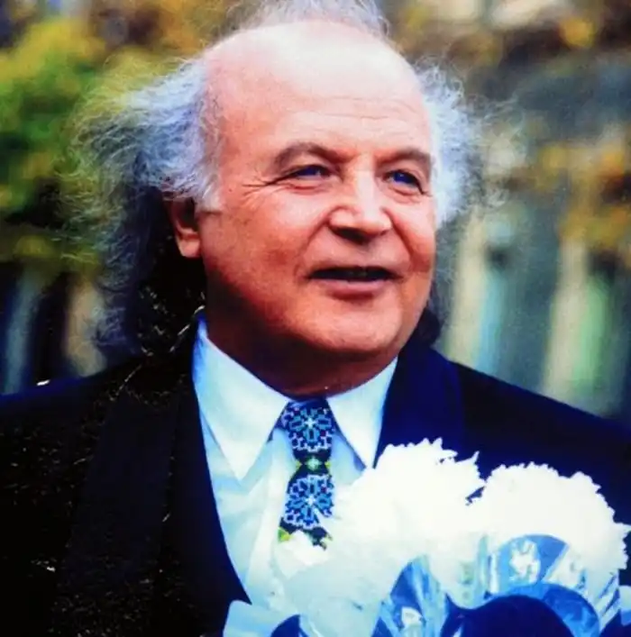
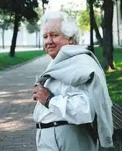

Михайло Миколайович Ткач – видатний український поет, кінодраматург, критик. Лауреат національної премії ім. Т. Г. Шевченка.
Народився 26 листопада 1932 року в селі Лукачани Кельменецького району Чернівецької області в селянській родині. У 1947 році закінчив семирічну школу, потім — Чернівецьке медучилище, у 1957 році — Чернівецький медичний інститут. В 1959 – 1961 роках навчався на Вищих літературних курсах при Літературному інституті ім. М. Горького в Москві.
Михайло Ткач — автор поетичних збірок "Йдемо на верховини" (1956), "На перевалі" (1957), "Житній вінок" (1961), "На смерекових вітрах" (1965), "Пристрасть" (1968), "Повернення" (1974), "Поворот землі" (1976), "Серед літа" та "Пісні" (1977), "Крок за обрій" та "Небо твоїх очей" (1982) та ін. Автор сценаріїв художнього фільму "Серед літа", фільму-опери "Наймичка", повнометражних документальних фільмів "Леся Українка", "Радянська Україна", "Про дружбу співа Україна", короткометражних документальних фільмів. За сценарій фільму "Радянська Україна" в 1973 році удостоєний Державної премії України ім. Т. Г. Шевченка. В 1993 році удостоєний звання Заслужений діяч мистецтв України. На вірші поета створено кілька десятків пісень. Найвідоміші з них: "Марічка", "Якщо любиш — кохай", "Зоряна ніч", "Ясени", "Сніг на зеленому листі", "На щастя, на долю", "Диво-сторона", "Коли нема того, що любиш", "Небеса очей твоїх". Ці пісні співав народ і кращі виконавці країни — Назарій Яремчук, Василь Зінкевич, Софія Ротару, Дмитро Гнатюк, Микола Кондратюк, Анатолій Мокренко, Костянтин Огнєвий та інші. З поетом працювали найкращі композитори України, але найбільша творча дружба склалася з Олександром Білашем. На вірш свого земляка Володимир Івасюк написав пісню "Серед літа". Помер 3 квітня 2007 року у Чернівцях.